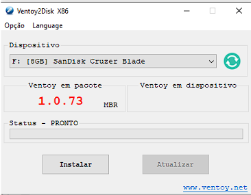

Como fazer um pendrive bootável usando o Ventoy
Aqui estarei utilizando o Ventoy para fazer uma mídia bootável nesse link você será redirecionado para o site do Ventoy em qual você selecionará o link de acordo com o seu SO. Após isso execute os seguintes passos:
-
No site do ventoy baixe o arquivo de acordo com o seu SO. Ele virá em formato compactado.
-
Ache o arquivo que foi feito o download e depois extraia para a pasta que desejar.
-
Depois da extração, ache o arquivo executável e execute-o.
-
Com a tela aberta e com seu pendrive identificado (caso não seja identificado, basta clicar na flecha ao lado e colocar o pendrive desejado) aí aperte em “Instalar”. Atenção, depois desse passo você perderá todos os seus arquivos contidos no pendrive.

-
Depois de formatado é só colocar as imagens “.iso” que desejar, nesse tutorial, irei estar usando o Windows 10 e o Linux Mint Cinnamon.
Download ISO do Windows
Vale lembrar que se você estiver no Windows será um pouquinho diferente do site aberto no Linux. Caso você esteja utilizando o Windows clicando aqui você encontra como baixar a imagem “.iso” do Windows, já clicando aqui você encontra como baixar o arquivo “.iso” do Windows no Linux.
Download ISO do Linux
Aqui é o download da imagem Linux do site oficial da distribuição Linux Mint, aqui independente do Sistema Operacinal que você estiver não há diferenças na hora de baixar a imagem. Seguindo aqui você encontra como fazer o download da ISO do Linux Mint Cinnamon